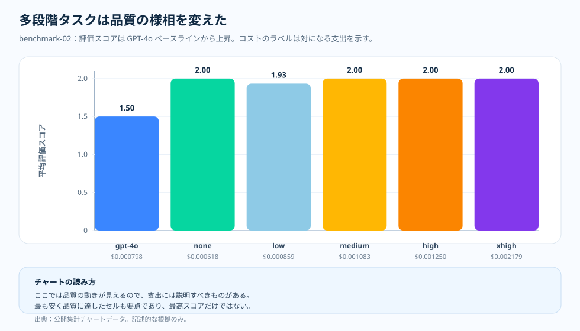

トピック記事 · benchmark-02 多段タスク
多段タスク：推論が試す価値を稼ぐとき
短い事実回答の断面のあと、推論 effort を「隠れた支出」——答えを変えずに請求だけを膨らませるダイヤル——に分類したくなる。だが、いくつもの制約を同時に頭に保つことに答えが懸かるタスクも、チームは走らせる。そこで問いは開き直す。より強いモデルやより多くの推論 effort は、コストだけでなく答えを変えるのか。このベンチマークは、その直感を検証にかける。
なぜこれを検証したか
短い事実回答の断面は一つの教訓を教えた。タスクが想起しか求めないとき、 追加の推論はおおむねコストを買う。だが、すべてのタスクが想起ではない。 現実の作業の多くは、小さな制約の連鎖を生かし続けることをモデルに求める ——いくつかの条件を組み合わせ、途中結果を運び、そのうえで答える。その形 では、「もっと考えさせる」は明白な無駄には見えなくなり、元を取りうるように 見え始める。
そこから、確かめるべききれいな仮説が手に入る。タスクが本当に複数の制約を まとめて保つことを要するなら、より強いモデルやより多くの推論 effort は、 より大きな請求だけでなく実際の品質を買うかもしれない。直感は理にかなって いる——実験は、それが抽象論ではなく計測された断面で成り立つかを検証する。
そこで検証した。benchmark-02 は多段の断面を固定し、同じモデルと effort の はしご——GPT-4o ベースライン、続いて GPT-5.2 の none、low、medium、high、 extra-high——を歩き、各セルでコストとレイテンシの隣に平均評価スコアを読む。 結果はまちまちで、率直に述べる価値がある。GPT-5.2 は GPT-4o ベースラインを 超えて品質を押し上げたが、GPT-5.2 の内部では最も高い effort 設定が自動的に 勝者ではなく、最も安い最高得点セルは推論トークンをまったく使わなかった。 下の1枚要約はそれを一つの枠で言い切り、続く各節が計測された詳細を示す。

問い
追加の推論が、ただ請求額を膨らませるのではなく品質の改善を買うのは、どんなときか。
根拠
benchmark-02 の品質・コスト・レイテンシ・トークン形状のチャート。
わかったこと
GPT-5.2 の low/none の領域は、最も高い effort 設定を使わずとも、GPT-4o のベースラインに対して目に見える品質の上積みを出した。
判断
多段の断面は品質の基準を超える最も低い effort へ振り向け、対になる品質チャートが動くときにだけ effort を上げる。

品質の動きが解釈を変えた
benchmark-02 では、ベースラインの GPT-4o セルが評価スコア平均 1.5 だった。GPT-5.2 は none・medium・high・extra-high effort で 2.0 に達し、low effort では 1.93 に届いた。チャートは「常に effort を上げよ」とは言っていない。このワークロードには、モデルと effort の選択を試す価値があるだけの構造が備わっている、と言っているのだ。
より大事な読みは、最初に成功したセルの形にある。GPT-5.2 none はリクエストあたり平均 $0.000618 で 2.0 に達した。これによって、最も高い effort 設定をデフォルトに祭り上げることなく、試行そのものが有用になる。
チャートの読み方
X 軸はモデル/effort のセル、Y 軸は平均評価スコア。各棒の下のラベルは、同じセルのリクエストあたり平均コストだ。この対の見方が大事なのは、品質の棒だけを見ると過剰な選択を誘いかねないからだ。複数のセルがルーブリックの頂点に達するなら、より安く速いほうが面白くなる。
これは度数のヒストグラムではない。各棒は、元データの表に独自のサンプル数と標準偏差を持つ、要約された実験セルだ。
このベンチマークが違っていた理由
短い事実回答のタスクは、おおむね短い回答を求めた。多段タスクは、小さな推論の連鎖を保ち続けることをモデルに求めた。それが「追加の思考」で買えるものを変えた。モデルと effort の選択は、もはや追加の支出に対してだけでなく、誤答の少なさに対して読まれることになった。
とはいえ、根拠は最大化主義に報いない。effort が上がればレイテンシも上がり、extra-high effort は平均 3.3s だった。品質がいったんルーブリックの頂点に達したら、次の問いは「より遅いセルが何か新しいことを語っているのか」になる。
押さえておきたい要点
推論が報われるのは、それが回答を変えるときであって、回答の雰囲気を変えるときではない。試行がまず属すべき場所は多段タスクだ。タスクにはモデルが恩恵を受けるだけの内部構造があり、評価者はその差を見て取れる。
したがって判断は「どこでももっと推論を使え」ではない。「多段の断面は、品質の基準を超える最も低い effort のレベルへ振り向けよ」だ。
根拠の表
docs/blog/data/chart-data/cost-curves-effort/benchmark-02/quality.json
から来ており、エビデンスダッシュボード
（配信されるチャートデータ）で
コストチャートと対にして読む。

| 根拠の行 | 指標 A | 指標 B | 付け加わること |
|---|---|---|---|
| GPT-4o baseline | 評価スコア 1.50 | $0.000798/request | 超えるべき明確なベースライン。 |
| GPT-5.2 none | 評価スコア 2.00 | $0.000618/request | この公開スライスで最も安い最高得点セル。 |
| GPT-5.2 low | 評価スコア 1.93 | $0.000859/request | ベースラインは上回るが、ここでは明快な勝者ではない。 |
| GPT-5.2 extra-high | 評価スコア 2.00 | $0.002179/request | 最高得点だが、請求はより大きくレイテンシは長い。 |
出典と根拠の境界
上記の数値はすべて本リポジトリの公開アーティファクトにたどれ、コストの主張はいずれも日付付きの価格スナップショットで算定している。品質の基準に届く最も低い effort で止めるというこの記事のルーティングの習慣は、記事自身の運用上の推論である。下の二つの Tier は、文書化された入力がどこで終わり、推論がどこから始まるのかを示す。
- [1] Tier 1 — 方法論の契約： 本リポジトリ、
docs/05-methodology.md（v1.0）。セルあたり N = 20 のオーサリング済みサンプル、R = 3 回の反復、公開集計スライスのみ。チャート読解の本文はこの凍結された前提に立っており、誤差バーは信頼区間ではなく標準偏差で、N = 20 で p 値は主張しない。 - [2] Tier 1 — PAYG 価格スナップショット： リクエストあたりのコストは本リポジトリの
pricing/azure-openai-payg-2026-05.yamlで算定している。出典：Azure OpenAI 価格ページ（2026-05-19 アクセス）· アーカイブ。定価が動けばコストの数値も変わる。 - [3] Tier 2 — benchmark-02 スライスの測定： 本リポジトリ、
benchmarks/02-multi-step-reasoning/analysis.json。effort 別の品質値——1.5 の GPT-4o ベースライン、GPT-5.2 の none・medium・high・extra-high が届いた 2.0、GPT-5.2 low の 1.93、そして推論トークンを使わないのにリクエストあたり $0.000618 で最も安い最高得点セルである GPT-5.2 none——と、リクエストあたり $0.000618 から $0.002179 の対応するコスト値の出典。 - [4] Tier 2 — レンダリング済みチャートデータ： 本リポジトリ、
docs/blog/data/chart-data/cost-curves-effort/benchmark-02/cost-per-request.json、quality.json、latency.json。docs/blog/data/chart-data/token-composition/benchmark-02/tokens.jsonと一緒に読むと、このスライスの品質の上積みが、ただ高いだけの請求ではなく正当化された請求を伴ったという根拠になる。 - [5] エビデンスダッシュボード： レンダリングされた benchmark-02 の品質とコストの対チャートは、同じアーティファクトを監査できる形である。
このスライスが何を証明し、何を証明しないか：この多段のスライスでは、GPT-5.2 が GPT-4o のベースラインに対して測定可能な品質の上積みを出したことを示す。より高い推論 effort が常に品質を上げる、あるいは追加の請求を正当化することは証明しない——ここでは最も安い最高得点セルは推論トークンをまったく使わなかった——し、同じ上積みが短い事実回答、ツールエージェント、統合の作業で現れることも証明しない。各トピックはそれぞれの測定を持つ。
この根拠から言えること
この断面では、多段タスクは GPT-4o ベースラインの 1.5 から GPT-5.2 の 2.0 へと測定可能な品質の上積みを見せ、その上積みは effort のはしごではなくモデルのアップグレードから来た。シリーズに「推論は答えが実際に変わるときにこそコストに見合う」という基準点を加える。
実務上のルール
- 同じ多段セルの品質チャートをコストチャートと対にして読んでください。品質の棒だけを見ないでください。
- 品質の基準を超える最も低い effort のセルを選んでください。より高いセルはスコアが動くときだけ候補として扱ってください。
- より高い effort へ引き上げる前にレイテンシを確認してください。effort が上がると待ち時間も伸びます。
- ワークロードの形が変わったら測定し直してください。このスライスの上積みは他のトピックには引き継がれない。
実務上のルール：多段の作業では、まず品質の基準を超える最も低いモデル／effort のセルを選び、このワークロードの形で対になる品質チャートが動くときにだけ推論 effort を上げてください。請求を正当化するのは品質の上積みであって、支出そのものではない。
次： ツールエージェント：品質が天井に達したあと、語り始めるのはレイテンシ — ツールを使う作業で追加の推論が天井に当たるとき、チャートはまず何を示すのか。